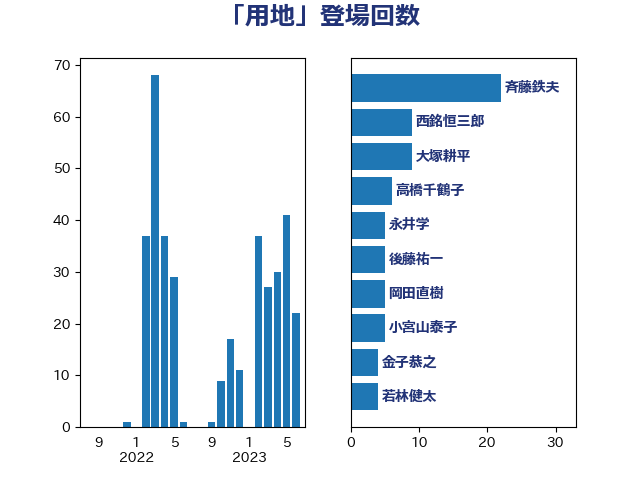

単語「用地」

| 斉藤鉄夫 | 公明党 | 22 回 |
| 西銘恒三郎 | 自由民主党 | 9 回 |
| 大塚耕平 | 国民民主党 | 9 回 |
| 高橋千鶴子 | 日本共産党 | 6 回 |
| 永井学 | 自由民主党 | 5 回 |
| 後藤祐一 | 立憲民主党 | 5 回 |
| 岡田直樹 | 自由民主党 | 5 回 |
| 小宮山泰子 | 立憲民主党 | 5 回 |
| 金子恭之 | 自由民主党 | 4 回 |
| 若林健太 | 自由民主党 | 4 回 |
| 篠原孝 | 立憲民主党 | 4 回 |
| 浜田靖一 | 自由民主党 | 4 回 |
| 新垣邦男 | 立憲民主党 | 4 回 |
| 宮本岳志 | 日本共産党 | 4 回 |
| 北神圭朗 | 無所属 | 4 回 |
| 三上えり | 立憲民主党 | 4 回 |
| 高良鉄美 | 無所属 | 3 回 |
| 階猛 | 立憲民主党 | 3 回 |
| 鈴木敦 | 国民民主党 | 3 回 |
| 豊田俊郎 | 自由民主党 | 3 回 |
| 藤井比早之 | 自由民主党 | 3 回 |
| 渡辺創 | 立憲民主党 | 3 回 |
| 伊波洋一 | 無所属 | 3 回 |
| 中川康洋 | 公明党 | 3 回 |
| 金城泰邦 | 公明党 | 2 回 |
| 野村哲郎 | 自由民主党 | 2 回 |
| 足立敏之 | 自由民主党 | 2 回 |
| 菅直人 | 立憲民主党 | 2 回 |
| 竹内真二 | 公明党 | 2 回 |
| 秋葉賢也 | 自由民主党 | 2 回 |
| 石井苗子 | 日本維新の会 | 2 回 |
| 矢倉克夫 | 公明党 | 2 回 |
| 田村貴昭 | 日本共産党 | 2 回 |
| 田中英之 | 自由民主党 | 2 回 |
| 瀬戸隆一 | 自由民主党 | 2 回 |
| 柘植芳文 | 自由民主党 | 2 回 |
| 枝野幸男 | 立憲民主党 | 2 回 |
| 松本剛明 | 自由民主党 | 2 回 |
| 岸田文雄 | 自由民主党 | 2 回 |
| 山岸一生 | 立憲民主党 | 2 回 |
| 小熊慎司 | 立憲民主党 | 2 回 |
| 小沢雅仁 | 立憲民主党 | 2 回 |
| 小山展弘 | 立憲民主党 | 2 回 |
| 和田有一朗 | 日本維新の会 | 2 回 |
| 勝部賢志 | 立憲民主党 | 2 回 |
| 伊藤岳 | 日本共産党 | 2 回 |
| 中野洋昌 | 公明党 | 2 回 |
| 青木愛 | 立憲民主党 | 1 回 |
| 青木一彦 | 自由民主党 | 1 回 |
| 阿部知子 | 立憲民主党 | 1 回 |
| 長友慎治 | 国民民主党 | 1 回 |
| 鈴木俊一 | 自由民主党 | 1 回 |
| 赤木正幸 | 日本維新の会 | 1 回 |
| 西田昭二 | 自由民主党 | 1 回 |
| 西村康稔 | 自由民主党 | 1 回 |
| 藤岡隆雄 | 立憲民主党 | 1 回 |
| 若松謙維 | 公明党 | 1 回 |
| 芳賀道也 | 国民民主党 | 1 回 |
| 臼井正一 | 自由民主党 | 1 回 |
| 紙智子 | 日本共産党 | 1 回 |
| 竹詰仁 | 国民民主党 | 1 回 |
| 穀田恵二 | 日本共産党 | 1 回 |
| 石井章 | 日本維新の会 | 1 回 |
| 石井浩郎 | 自由民主党 | 1 回 |
| 白石洋一 | 立憲民主党 | 1 回 |
| 湯原俊二 | 立憲民主党 | 1 回 |
| 清水貴之 | 日本維新の会 | 1 回 |
| 清水真人 | 自由民主党 | 1 回 |
| 浅川義治 | 日本維新の会 | 1 回 |
| 津島淳 | 自由民主党 | 1 回 |
| 比嘉奈津美 | 自由民主党 | 1 回 |
| 橘慶一郎 | 自由民主党 | 1 回 |
| 横沢高徳 | 立憲民主党 | 1 回 |
| 本田顕子 | 自由民主党 | 1 回 |
| 木原稔 | 自由民主党 | 1 回 |
| 平林晃 | 公明党 | 1 回 |
| 岩田和親 | 自由民主党 | 1 回 |
| 山下貴司 | 自由民主党 | 1 回 |
| 山下芳生 | 日本共産党 | 1 回 |
| 小野田紀美 | 自由民主党 | 1 回 |
| 小野泰輔 | 日本維新の会 | 1 回 |
| 小里泰弘 | 自由民主党 | 1 回 |
| 室井邦彦 | 日本維新の会 | 1 回 |
| 大西健介 | 立憲民主党 | 1 回 |
| 堤かなめ | 立憲民主党 | 1 回 |
| 古川元久 | 国民民主党 | 1 回 |
| 勝俣孝明 | 自由民主党 | 1 回 |
| 加藤鮎子 | 自由民主党 | 1 回 |
| 加田裕之 | 自由民主党 | 1 回 |
| 伴野豊 | 立憲民主党 | 1 回 |
| 仁比聡平 | 日本共産党 | 1 回 |
| 仁木博文 | 無所属 | 1 回 |
| 中野英幸 | 自由民主党 | 1 回 |
| 中村裕之 | 自由民主党 | 1 回 |
| おおつき紅葉 | 立憲民主党 | 1 回 |